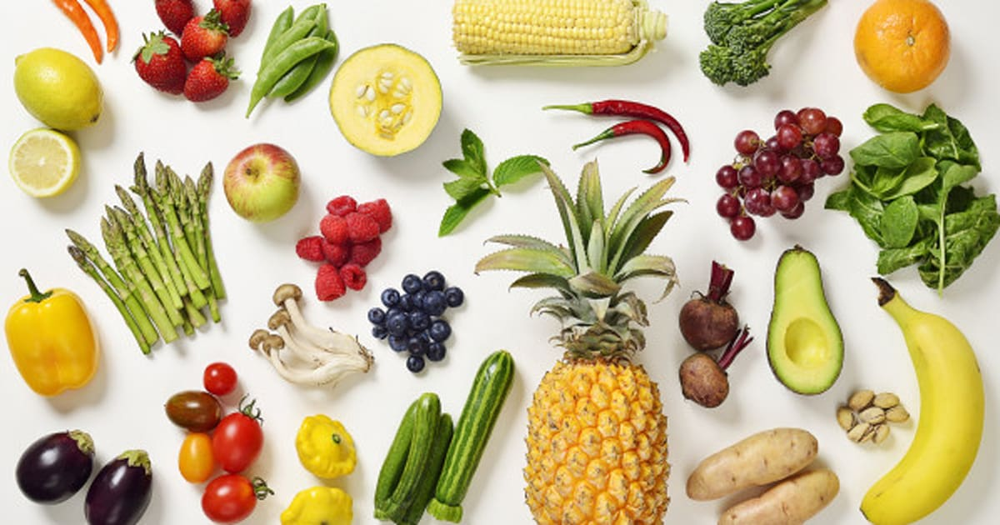
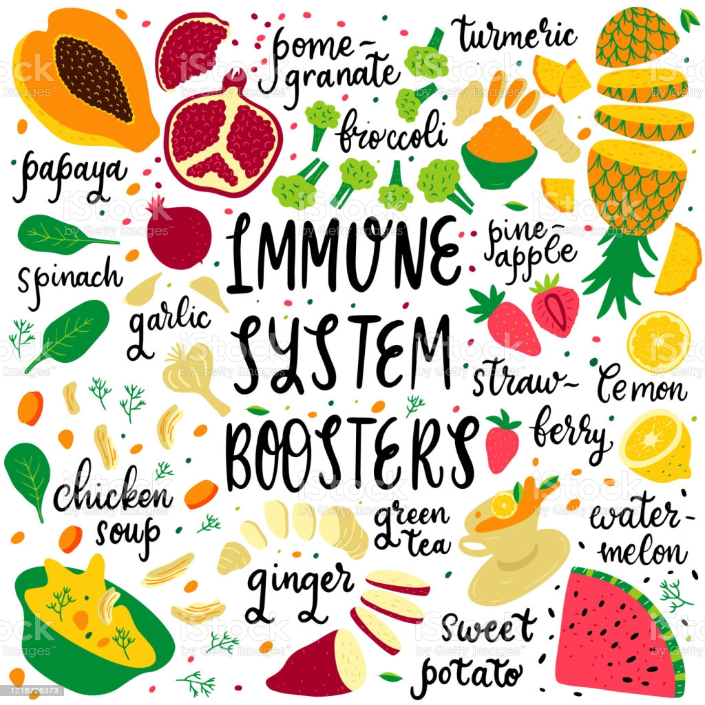
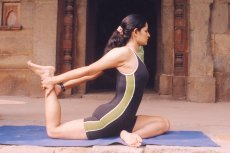

Start your morning off right with a big glass of water. After fasting all night, this first drink of water will help to hydrate your cells and wake you up. Pssst, getting yourself a Hydroflask will encourage you to drink more water through out the day. Plus, it can keep your water cold or warm all day. It may seem strange, but having a water bottle on you all day helps to remind you to drink water!
Making your meals ahead of time will end up saving you plenty of time and stress in the long run! Getting yourself some handy dandy meal prep containers will also be a game-changer for this meal prep hack. You can find plenty of great recipes for meal prepping online, that freeze and reheat really well. You can also make quick on-the-go snacks such as this vegan cookie recipe. Or, if you are too busy to prep a week of cooking, there are food services such as Purple Carrot and Freshly that can help you have balanced meals with minimal cooking!
It’s increasingly important to keep your immunity strong by getting your daily source of nutrition and vitamins. If you’ve been lacking on keeping your medicine drawer full, check out Rite Aid for almost anything you would need. They have everything from cold medication to vitamins and vaccines. Don’t forget to keep up on your health regimen!
Exercise can help you feel energized and improve your sleep and overall well being. Instead of forcing yourself to do a form of exercise you don’t enjoy, try out a new activity like yoga, hiking, pilates, biking or swimming. This will help you make exercise a sustainable habit, and you’ll also gain more physical, mental and emotional benefits from something you enjoy.There are many online resources and products to help you remain active at home. For example, there are plenty of online yoga sessions, so you don’t have to do it by yourself. There’s Yoga Class Plan and Yoga Download. There’s also Openfit, which offers full body workouts that you can follow to keep you motivated.
Sleep is an important part of health and if you don’t get enough of it, it can negatively impact your energy levels, motivation, concentration and even appetite regulation. Make sure you prioritize your sleep and keep a consistent bedtime routine with your busy lifestyle to maintain good health and reach your goals. A sleep aid device might help you to get a better night’s sleep and help you to fall asleep faster. If you struggle with getting a good night’s sleep, these additional tips and products may help you! Also, the mattress you have can really affect how you sleep, so if you are due for a new mattress. Be sure to get a high quality one from Nectar, Idle Sleep, Eco Terra Beds or Puffy Mattress. There’s also Molecule and Purple if you are looking for a mattress that really hits all your priorities!